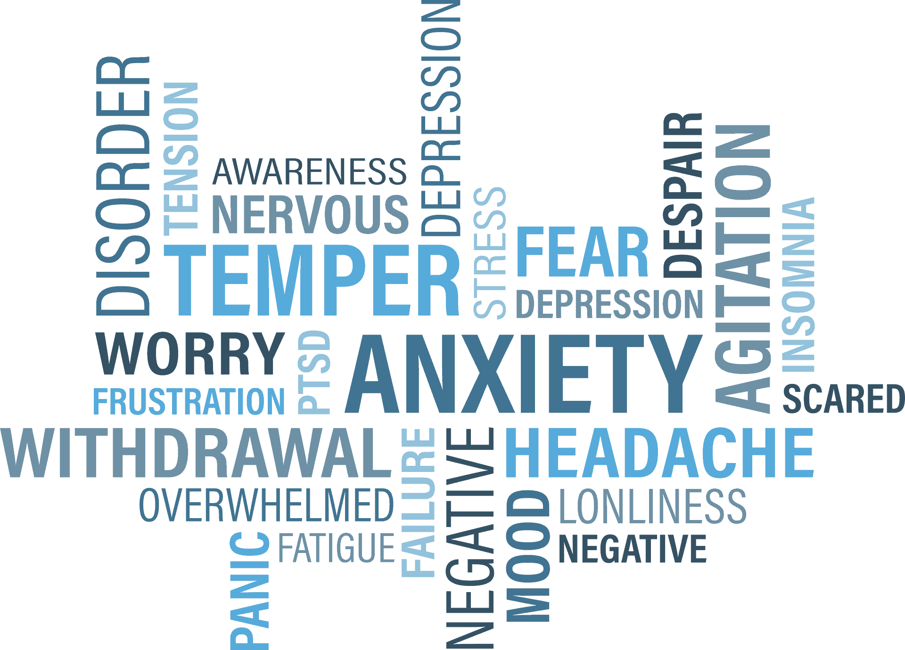

Tentang Kesehatan Mental

Kesehatan Mental adalah keadaan kesejahteraan emosional, psikologis, dan sosial di mana individu mampu mengatasi tekanan hidup, berfungsi secara produktif, serta memberikan kontribusi yang berarti dalam masyarakat. Ini melibatkan keseimbangan yang baik antara berbagai aspek kehidupan sehari-hari, seperti mengelola stres, memiliki hubungan yang sehat, dan memiliki kemampuan untuk beradaptasi dalam menghadapi tantangan kehidupan. Kesehatan mental yang baik menjadi landasan penting untuk kehidupan yang berkualitas dan pencapaian potensi seseorang.
Topik Kesehatan Mental

Stres
Stres tidak selalu buruk, namun stres jangka panjang bisa berdampak buruk pada kesehatanmu. Berbagai situasi atau peristiwa kehidupan dapat menimbulkan stres. Ketika kita menghadapi pengalaman baru atau situasi di luar kendali kita, kita dapat merasa lebih stres daripada biasanya. Stres tidak dapat dihilangkan, tetapi kita dapat mengatasi stres dengan berbagai cara. Jika kamu kesulitan mengatasi stres, dapatkan bantuan profesional untuk mencari cara mengelola stres dengan lebih baik.
Cemas
Merasa cemas itu biasa, namun kecemasan yang berlebihan dapat berdampak negatif. Kecemasan berlebihan dapat menimbulkan gejala fisik seperti gemetar, berkeringat, mual, dan detak jantung yang cepat. Kamu juga mungkin mengalami sakit perut, serta leher dan bahu yang tegang. Semakin tinggi tingkat kecemasanmu, mungkin kamu akan semakin menghindar dari berbagai situasi. Jika kecemasanmu memengaruhi kehidupan sehari-harimu, dapatkan bantuan ahli kesehatan mental. Mereka dapat mengajarkan strategi mengatasi kecemasan dan menentukan apakah kamu membutuhkan perawatan rutin.
Depresi
Depresi adalah perasaan sedih atau putus asa yang mendalam dan berkepanjangan. Pada awalnya, kamu mungkin merasa tidak bersemangat. Kamu tetap menjalani kehidupan sehari-hari, namun semua terasa lebih berat dan sia-sia. Semakin lama, mungkin kamu terlibat dalam perilaku yang merugikan diri sendiri. Jika kamu terus merasa kehilangan minat terhadap hal-hal yang biasa kamu nikmati, dapatkan bantuan dari seorang profesional. Mereka dapat membantumu menemukan penyebabnya dan menentukan tingkat keparahan depresimu.
Keluarga dan Hubungan
Ruang aman dan nyaman untuk bercerita tentang orang-orang terdekatmu. Semua masalah keluarga dan hubungan berbeda, dan dapat memengaruhimu secara berbeda pula. Jika kamu menghadapi masalah dengan orang terdekat, kamu bisa mendapat manfaat dari bantuan ahli kesehatan mental.